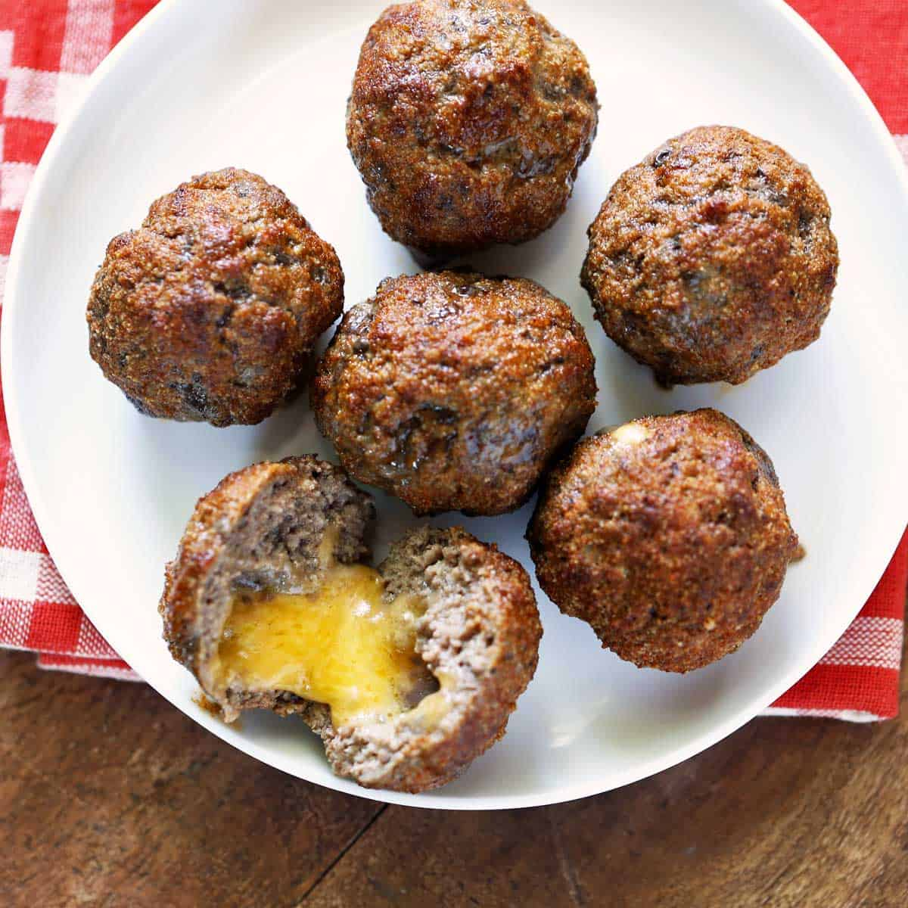

Mozarella-stuffed-meatballs

Description
This is a perfect dish for someone who is doing a low carb diet.
If desired, you can add a few classic seasonings and make a flavorful keto option without any extra work!
Ingredients
- 1kg of ground beef
- 1 tablespoon of salt
- 230 grams of mozarella
Steps
- preheat the oven to 175°C
- Mix the salt and meat in a bowl.
- Cut the cheese into 8 cubes.
- Divide the meat into ball. Make a well in the center of each of them
and insert the cheese. Press the meat over the wells to enclose the cheese
- Arrange the meatballs in a glass baking dish.
- Bake for 25 minutes until cooked and it will be ready to serve.